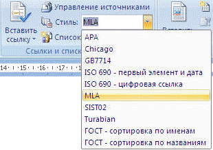

9.1 Создание списка литературы
Список литературы — это список литературных источников, на которые
пользователь ссылается либо которые цитирует при создании документа. Обычно
список литературы размещается в конце документа.
Для добавления к документу литературного источника необходимо:
- На вкладке Ссылки в группе Ссылки и списки
литературы щелкните стрелку рядом с командой Стиль.

- Выберите стиль, который следует применить к цитате и
литературному источнику. Например, в документе, относящемся к
области общественных наук, для цитат и литературных источников
обычно применяются стили MLA или APA.
- Щелкните место в конце предложения или выражения, которое будет
использовано в качестве цитаты (после которого необходимо вставить
ссылку на литературный источник).
- На вкладке Ссылки в группе Ссылки и списки
литературы выберите команду Вставить ссылку.
- Выполните одно из следующих действий.
- Чтобы добавить сведения о литературном источнике, выберите
команду Добавить новый источник.
- Чтобы добавить заполнитель для отображения места
расположения цитаты, а затем ввести сведения, выберите команду
Добавить новый заполнитель. Рядом с
источниками заполнителей в диспетчере источников появится
вопросительный знак.
- Чтобы начать ввод сведений о литературном источнике, нажмите
стрелку рядом с полем Тип источника. Например,
литературным источником может быть книга, отчет или веб-узел.
- Введите библиографические сведения об этом литературном
источнике. Чтобы ввести дополнительные сведения о литературном
источнике, установите флажок Показать все поля списка
литературы.
- После добавления всех ссылок и заполнения сведений о
литературных источниках перейдите в конец документа и вставьте
список литературы (вкладка Ссылки в группе
Ссылки и списки литературы, команда Список литературы).